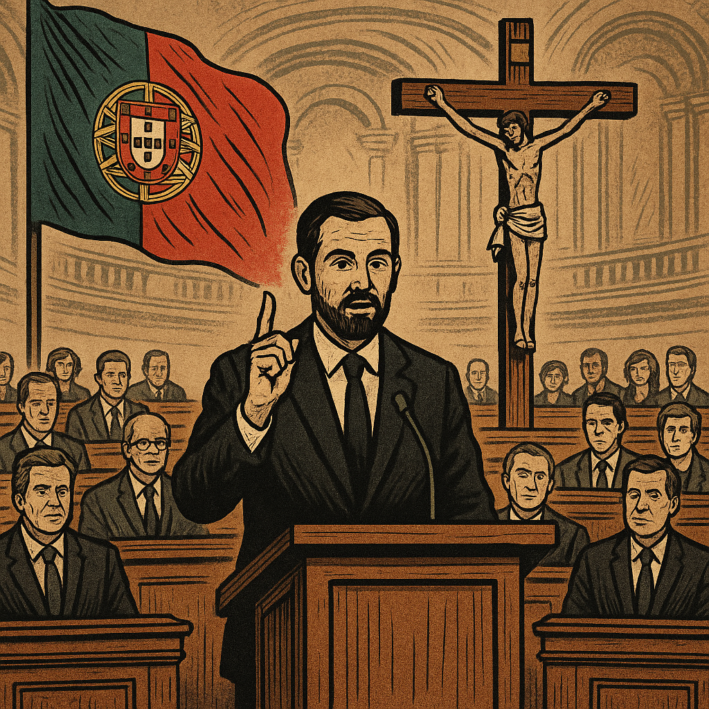

Publicado em 2025-04-25 19:43:41
Subiram ao púlpito como quem sobe ao altar. Olhares elevados, discursos perfumados de piedade. Falam de moral, falam de Deus, falam da família tradicional como quem recita salmos numa liturgia do Estado. Mas são políticos — e disso não rezam os seus discursos.
O parlamento português transformou-se numa sacristia sem incenso, onde os beatos modernos entoam hinos à virtude enquanto ocultam os pecados do sistema. Vestem a palavra com véus de pureza, mas por baixo usam os mesmos fatos gastos do compadrio, da intriga e do voto fácil. Trocaram o debate por doutrina, a política por evangelização, a república por púlpito.
Falam em nome de valores — mas esquecem os direitos. Falam da santidade da vida — mas ignoram a miséria em que ela se vive. Falam da pureza da família — mas calam-se diante dos contratos ruinosos, dos negócios obscuros e dos filhos bem-colocados em empresas do Estado.
Estes novos fariseus da política nacional são exímios no teatro: palram de ética enquanto apertam a mão dos lobbies; condenam o povo à penitência fiscal em nome da ordem divina da economia; juram servir o bem comum, mas servem apenas os da sua comuna.
É a beatice elevada a programa de governo.
A santidade de fachada em substituição do pensamento livre.
A democracia capturada por um moralismo que tudo julga… menos a si próprio.
E o povo assiste, entre entorpecido e descrente, como se o parlamento fosse já uma extensão da missa televisiva. Mas há quem não reze por esse catecismo. Há quem leia a Constituição em vez da bula. Há quem prefira a justiça à salvação eterna.
Porque este país não precisa de beatos no poder.
Precisa de cidadãos livres, políticos íntegros e ideias com coragem.
O resto é liturgia.
E a liberdade não cabe em genuflexão.
Com a colaboração de Augustus.
Imagem cortesia de OpenAI, (c)